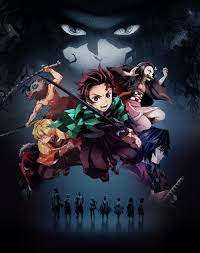
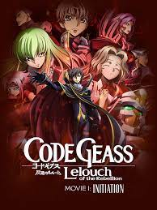

1

Shingeki No Kyojin: The Final Season
It is set in a world where humanity lives inside cities surrounded by three enormous walls that protect
them from the gigantic man-eating humanoids referred to as Titans; the story follows Eren Yeager, who vows
to exterminate the Titans after a Titan brings about the destruction of his hometown and the death of his mother.
Jan 2022 - Apr 2022
TV (24 eps)
 9.15
9.15
2
Fullmetal Alchemist: Brotherhood
After a horrific alchemy experiment goes wrong in the Elric household, brothers Edward and Alphonse are left
in a catastrophic new reality. Ignoring the alchemical principle banning human transmutation, the boys attempted
to bring their recently deceased mother back to life. Instead, they suffered brutal personal loss: Alphonse's body
disintegrated while Edward lost a leg and then sacrificed an arm to keep Alphonse's soul in the physical realm by
binding it to a hulking suit of armor.
Apr 2009 - Jul 2010
TV (64 eps)
 9.15
9.15
3

Steins;Gate
The self-proclaimed mad scientist Rintarou Okabe rents out a room in a rickety old building in Akihabara, where
he indulges himself in his hobby of inventing prospective "future gadgets" with fellow lab members: Mayuri Shiina,
his air-headed childhood friend, and Hashida Itaru, a perverted hacker nicknamed "Daru." The three pass the time by
tinkering with their most promising contraption yet, a machine dubbed the "Phone Microwave," which performs the strange
function of morphing bananas into piles of green gel.
Apr 2011 - Sep 2011
TV (24 eps)
 9.09
9.09
4

Gintama
Gintama is a story of a handyman named Gintoki, a samurai with no respect for rules set by the invaders,
who's ready to take any job to survive. He and his gang, however, are also among the very few who have not
forgotten the morale of a swordsman. Wherever they go, all they do is to create troubles.
Apr 2006 - Oct 2018
TV (353 eps)
 9.09
9.09
5

Fruit Basket: Final Season
Fruits Basket tells the story of Tohru Honda, an orphan girl who, after meeting Yuki, Kyo, and Shigure Sohma,
learns that thirteen members of the Sohma family are possessed by the animals of the Chinese zodiac and are cursed
to turn into their animal forms when they are weak, stressed, or when they are embraced by anyone of the opposite sex
that is not possessed by a spirit of the zodiac.
Apr 2021 - Jun 2021
TV (13 eps)
 9.06
9.06
6

HunterXHunter
The story focuses on a young boy named Gon Freecss who discovers that his father, who left him at a young age,
is actually a world-renowned Hunter, a licensed professional who specializes in fantastical pursuits such as
locating rare or unidentified animal species, treasure hunting, surveying unexplored enclaves, or hunting down
lawless individuals. Gon departs on a journey to become a Hunter and eventually find his father. Along the way,
Gon meets various other Hunters and encounters the paranormal.
Oct 2011 - Sep 2014
TV (148 eps)
 9.05
9.05
7

Koe no Katachi
When a grade school student with impaired hearing is bullied mercilessly, she transfers to another school. Years
later, one of her former tormentors sets out to make amends.
Sep 2016 - Sep 2016
Movie (1 eps)
 8.96
8.96
8

Kimetsu No Yaiba
One day, after resting with a neighbour following a long day, he returns home to find his entire family slaughtered,
save for his younger sister Nezuko. He soon discovers she has transformed into a demon, a powerful creature that
possesses incredible regeneration and hunger for human flesh.
Dec 2021 - Feb 2022
TV (24 eps)
 8.92
8.92
9

Code Geass
Set in an alternate timeline, it follows the exiled prince Lelouch vi Britannia, who obtains the "power of absolute
obedience" from a mysterious woman named C.C. Using this supernatural power, known as Geass, he leads a rebellion against
the rule of the Holy Britannian Empire, commanding a series of mecha battles.
Oct 2006 - Sep 2008
TV (50 eps)
 8.91
8.91
10

Jujutsu Kaisen
Yuji Itadori, a kind-hearted teenager, joins his school's Occult Club for fun, but discovers that its members are
actual sorcerers who can manipulate the energy between beings for their own use. He hears about a cursed talisman - the finger
of Sukuna, a demon - and its being targeted by other cursed beings.
Oct 2020 - Mar 2021
TV (24 eps)
 8.71
8.71